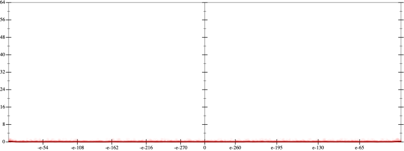
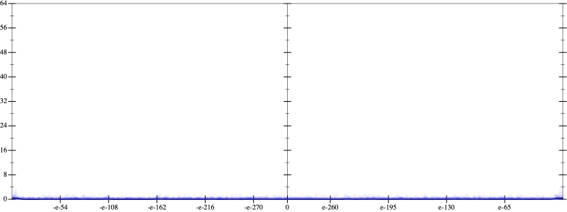
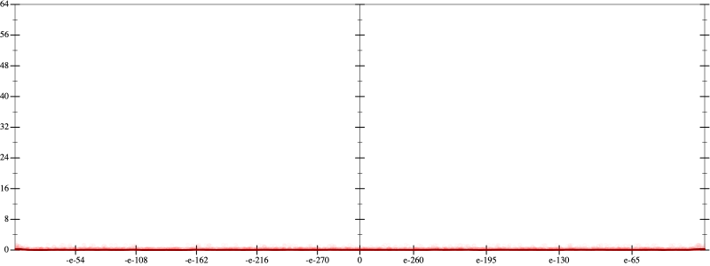
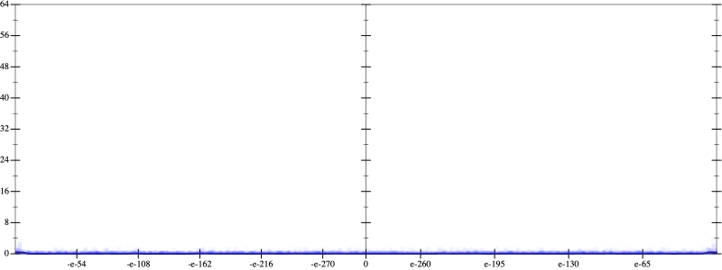

Initial program 0.0
\[\left(120.0 \cdot x + -160.0 \cdot \left(\left(x \cdot x\right) \cdot x\right)\right) + 32.0 \cdot \left(\left(\left(\left(x \cdot x\right) \cdot x\right) \cdot x\right) \cdot x\right)\]
- Using strategy
rm Applied add-log-exp0.0
\[\leadsto \left(120.0 \cdot x + -160.0 \cdot \left(\left(x \cdot x\right) \cdot x\right)\right) + \color{blue}{\log \left(e^{32.0 \cdot \left(\left(\left(\left(x \cdot x\right) \cdot x\right) \cdot x\right) \cdot x\right)}\right)}\]
Applied simplify0.0
\[\leadsto \left(120.0 \cdot x + -160.0 \cdot \left(\left(x \cdot x\right) \cdot x\right)\right) + \log \color{blue}{\left({\left(e^{32.0}\right)}^{\left(\left(x \cdot x\right) \cdot {x}^{3}\right)}\right)}\]
 
